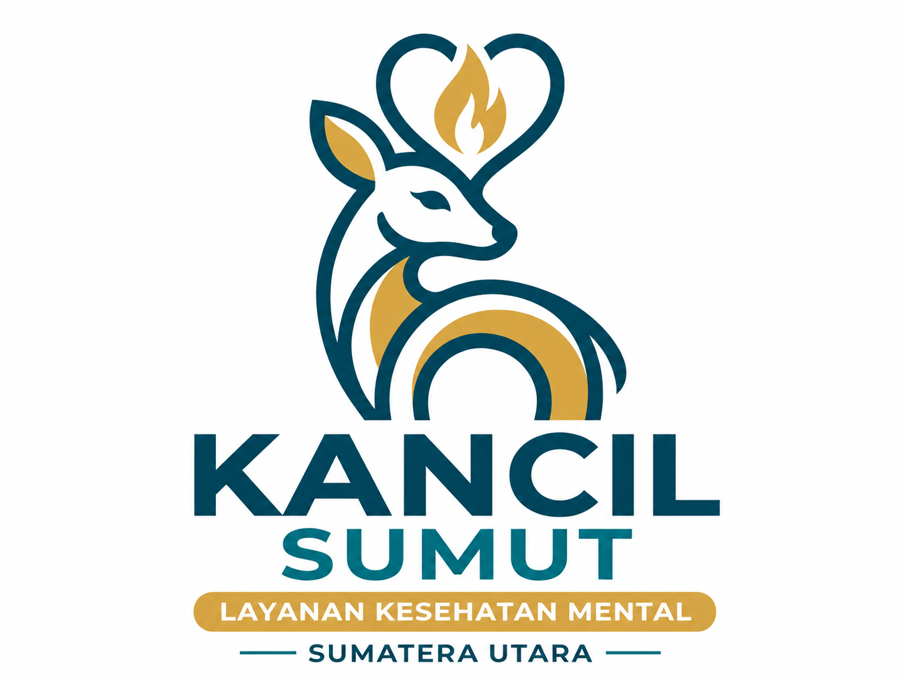

Hai, Pelajar Sumut! Merasa lelah dengan tugas sekolah? Mengalami masalah pertemanan, atau bingung arah masa depan? Kamu tidak sendirian. KANCIL SUMUT hadir sebagai ruang aman untuk mendengar semua ceritamu tanpa dihakimi. Di sini, rahasiamu 100% aman bersama kami.

Tuangkan isi hatimu secara anonim. Tidak ada nama, tidak ada penghakiman — hanya pendengaran yang tulus.
Mulai curhat →Artikel kesehatan mental ditulis khusus untuk pelajar Sumut — ringan, relevan, dan bisa langsung dipraktikkan.
Baca artikel →Butuh bantuan segera? Kami menyediakan daftar layanan profesional dan hotline darurat yang bisa dihubungi kapan saja.
Lihat kontak →Mengapa KANCIL SUMUT?
Kami paham tekanan menjadi pelajar di Sumatera Utara — dari tekanan akademik, pertemanan yang rumit, hingga kebingungan soal masa depan. KANCIL SUMUT hadir karena setiap ceritamu berharga dan setiap pelajar berhak didengar.
Langkah pertama selalu yang tersulit. Tapi kamu tidak perlu menghadapinya sendirian. Kami di sini.
✍️ Mulai Curhat Sekarang